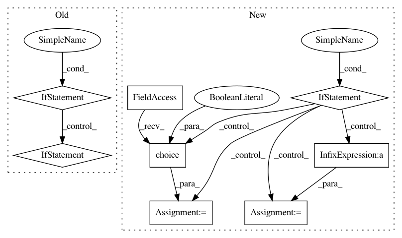

cd93c5446a236ed76456b188579e671d0619f333,scanpy/preprocessing/simple.py,,subsample,#Any#Any#Any#Any#,612
Before Change
AnnData (copy == False) or a copy of it (copy == True).
from .. import utils
if not isinstance(data, AnnData):
X = data
return utils.subsample(X, subsample, seed)
adata = data.copy() if copy else data
_, smp_indices = utils.subsample(adata.X, subsample, seed)
adata.inplace_subset_smp(smp_indices)
for k in adata.smp_keys():
// TODO: this should also be taken into account when slicing
if k + "_masks" in adata.add:
adata.add[k + "_masks"] = adata[k + "_masks"][:, smp_indices]
return adata if copy else None
def zscore_deprecated(X):
After Change
raise ValueError("`fraction` needs to be within [0, 1], not {}"
.format(fraction))
np.random.seed(seed)
if isinstance(data, AnnData):
adata = data.copy() if copy else data
new_n_smps = int(fraction * adata.n_smps)
logg.m("... subsampled to {} data points".format(new_n_smps), v=4)
smp_indices = np.random.choice(adata.n_smps, size=new_n_smps, replace=False)
adata.inplace_subset_smp(smp_indices)
return adata if copy else None
else:
X = data
new_n_smps = int(fraction * X.shape[0])
logg.m("... subsampled to {} data points".format(new_n_smps), v=4)
smp_indices = np.random.choice(X.shape[0], size=new_n_smps, replace=False)
return X[smp_indices]
def zscore_deprecated(X):
Z-score standardize each variable/gene in X.
Use `scale` instead.
In pattern: SUPERPATTERN
Frequency: 3
Non-data size: 8
Instances
Project Name: theislab/scanpy
Commit Name: cd93c5446a236ed76456b188579e671d0619f333
Time: 2017-07-21
Author: f.alex.wolf@gmx.de
File Name: scanpy/preprocessing/simple.py
Class Name:
Method Name: subsample
Project Name: idaholab/raven
Commit Name: 349f73597017d85c1efcd88dd5dc06ea4212a2ac
Time: 2020-07-06
Author: diego.mandelli@inl.gov
File Name: framework/Optimizers/parentSelectors/parentSelectors.py
Class Name:
Method Name: tournamentSelection
Project Name: SpiNNakerManchester/sPyNNaker
Commit Name: 070003f70129fd8dd88364df6d2ae64c1d2a35f8
Time: 2017-11-24
Author: andrew.gait@manchester.ac.uk
File Name: spynnaker/pyNN/models/neural_projections/connectors/fixed_number_post_connector.py
Class Name: FixedNumberPostConnector
Method Name: _get_post_neurons